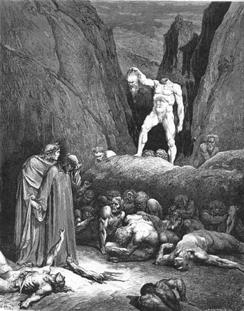

Canto XXVIII
Vala dos separatistas
Espíritos de Maomé e Bertran de Born
Quem poderia, mesmo fazendo uso
da melhor prosa, narrar as cenas de sangue e das feridas, que eu vi naquele
triste lugar? Todas as línguas, por certo, estariam falidas, pois nossa
memória e nosso vocabulário não são suficientes para compreender tamanha
dor. Nem nos campos de batalha das piores guerras se viu tantos corpos
estraçalhados, com deformações e feridas tão terríveis, quanto os que
povoavam aquela nona vala.
Próximo a nós estava um condenado com as entranhas à vista, rasgado do
nariz à garganta e com os intestinos pendurados entre as pernas. Eu o
olhava, hesitante, quando ele, me olhando de volta, rasgou o peito com
as mãos dizendo:
- Vês, tu, como eu me maltrato? Vês como Maomé
e Ali estão desfeitos, gemendo, e todos
esses semeadores de discórdias e heresias? Todos aqui são continuamente
rasgados, cruelmente, por um diabo que aqui nos tortura eternamente. Em
vão saram as feridas, pois logo ele volta e nos dilacera outra vez! -
depois me perguntou - E tu, quem és, tentando retardar a tua pena aí sobre
a ponte?
- Nem morte ainda o alcançou, nem culpa ordena que ele sofra aqui - respondeu
Virgílio -, mas para que ele possa ter esta experiência, eu, que estou
morto, devo guiá-lo por todo este inferno de giro em giro. Isto é tão
verdadeiro como a minha presença aqui.
Quando ouviram essas palavras, mais de cem almas se aproximaram para
me ver, quase esquecendo por um momento o seu intenso sofrimento.
- Diga ao Frei Dolcino - falou Maomé
- que ele se abasteça de mantimentos e não saia do seu refúgio nas montanhas,
se ele não tiver pressa em me encontrar. Se não tomar esses cuidados,
o bispo de Novarra certamente o vencerá!
Depois de falar, Maomé se levantou e saiu. Veio então outro que tinha
a garganta furada, o nariz totalmente decepado e apenas uma orelha inteira.
Ele se separou do grupo e abriu sua goela vermelha, que falou:
- Ó tu que vi na sua terra latina, lembra-te de Pier
de Medicina quando voltares, e avisa a Guido
e Angiolello que, se nossa visão é certa, eles serão arrancados do
seu barco e afogados perto de Cattólica, por traição de um tirano cruel.
Aquele traidor, que só vê por um olho,
reina sobre uma cidade que alguém aqui deseja nunca ter visto.
- Quem é aquele que nunca deseja ter visto a cidade onde reina o tirano?
- perguntei.
- É este aqui. Mas ele não fala nada! - disse Pier, mostrando um companheiro
calado e assustado, cuja boca ele abriu com a mão. - Este homem, no exílio,
acabou com as dúvidas de César quando lhe disse: "O homem preparado, quando
hesita, perde."
Oh, como ele parecia assustado, com a língua presa na garganta, Cúrio,
que antes fora tão grande orador.
Um outro, com ambas mãos truncadas, levantou os cotos no ar, espalhando
sangue sobre seu rosto, e gritou:
- Recorda o pobre Mosca, que disse
"o que está feito, está feito" que para os toscanos foi semente tosca!
- E para a tua casta será a morte! - respondi-lhe, irritado, e ele, com
mais essa ferida, retirou-se.
Continuei a observar a multidão quando vi um corpo que caminhava sem
cabeça. Ele segurava sua cabeça pelos cabelos, balançando-a como lanterna.
Quando chegou junto da ponte, ergueu alto o braço que a segurava, para
que sua fala pudéssemos ouvir melhor:
- Sou Bertran de Bórnio - gritou
-, e sofro esta pena monstruosa por ter instigado o jovem rei contra seu
pai. Eu pus o pai contra o filho e por ter separado aqueles antes tão
unidos, tive o meu cérebro separado do meu tronco. E assim, em mim tu
vês, o perfeito contrapasso.
|  |
| Bertran de Born, condenado a ter a cabeça separada do corpo para sempre, por ter causado a separação de pai e filho. Ilustração de Gustave Doré (séc XIX). |
|